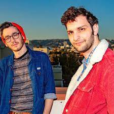
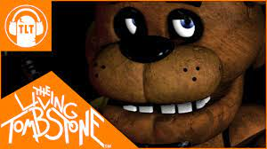
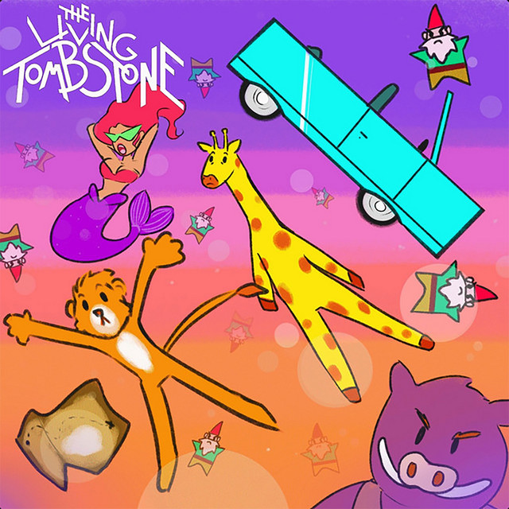

The Living Tombstone (en español: La Lápida Viviente, abreviado: TLT) es un dúo de rock electrónico israelí formado en Nueva York, Estados Unidos
El grupo se destaca por sus canciones y videos musicales basados en videojuegos y medios de la cultura pop, como la saga Five Nights at Freddy's, Overwatch y My Little Pony, así como por su música original.
Varias de sus canciones se han vuelto virales e incluso se les atribuye haber generado varios memes en Internet. Además de estos vídeos, han desarrollado música para el videojuego In Sound Mind y han creado el videojuego AudioClash: Battle of the Bands. Una publicación de la revista musical británica NME se ha referido a ellos como "la banda de videojuegos más grande de Internet".
